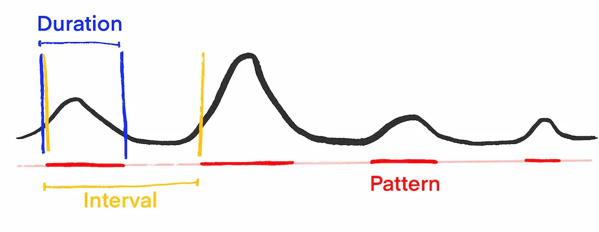
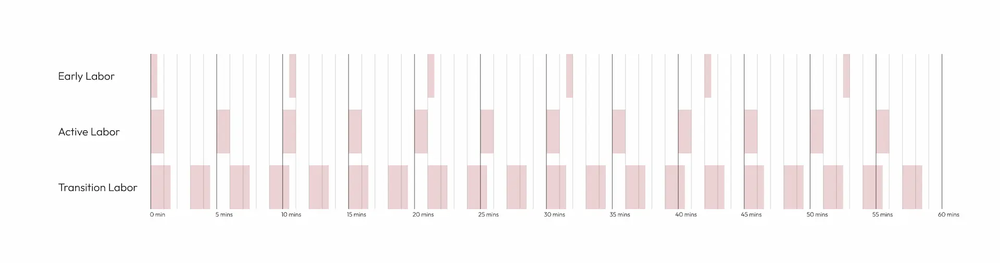

If you're in your third trimester and wondering how you'll actually do this when the time comes — you're thinking about it at exactly the right moment. Learning how to time contractions before labor starts means one less thing to figure out when it really matters. This guide walks you through what to track, what the numbers mean, and how to know when it's time to head to the hospital. If you want to know how to keep track of contractions without the mental load, Labora can handle the tracking automatically — from your Lock Screen, or even from your partner's hand.
What does "timing a contraction" actually mean?
When someone tells you to "time your contractions," they're asking you to track three things.
Duration is how long a single contraction lasts — from the moment it starts until it eases off.
Interval (also called frequency) is the time from the start of one contraction to the start of the next. This is different from the gap between the end of one and the beginning of the next — a really common point of confusion. If a contraction starts at 12:00 and the next starts at 12:03, your interval is 3 minutes, regardless of how long each one lasted.
Pattern is what you get when you watch duration and interval together over time. No single contraction tells the whole story — but 30–60 minutes of data will show you whether labor is progressing, stalling, or hasn't really started yet.

How to time contractions step by step
You don't need any special equipment — a clock on your phone works fine. Here's exactly what to do:
- Note the time when the contraction begins. This is your start time.
- Note the time when it ends. Subtract start from end to get the duration.
- Note when the next contraction begins. Subtract the first start time from this new start time — that's your interval.
- Repeat and watch for a pattern over 30–60 minutes. One data point means nothing; a consistent pattern means a lot.
The pattern is what matters most. Contractions that are getting longer, stronger, and closer together are a sign that labor is progressing. Contractions that stay irregular or space out are often early labor or Braxton Hicks.
What do contractions look like at each stage of labor?
As labor progresses, contractions get longer, stronger, and closer together. Here's what that looks like in practice — and what to do at each stage.
| Stage | Duration | Interval | What to do |
|---|---|---|---|
| Early labor | 30–45 sec | 5–20 min | Start timing, stay comfortable at home |
| Active labor | 45–60 sec | 3–5 min | Call your provider, prepare to leave |
| Transition | 60–90 sec | 2–3 min | You should already be at the hospital |

These are general guidelines. Your provider may give you different instructions based on your specific pregnancy — always defer to their guidance.
When should you go to the hospital? (The 5-1-1 rule)
The 5-1-1 rule is the most widely used guideline for first-time moms: contractions every 5 minutes apart, lasting at least 1 minute each, for at least 1 hour. When that pattern is consistent, it's generally time to head in.
But 5-1-1 is a starting point, not a universal rule. Your provider might give you a different number based on your situation. I was personally told 5-1-2 — the same 5 minutes apart and 1 minute duration, but sustained for 2 hours instead of one. The extra time was to make sure things were well established before heading in. If you live far from the hospital, your provider might tell you to leave earlier. If you're 10 minutes away, you might have a little more flexibility. Ask your provider at your next appointment exactly what threshold they want you to use — and write it down.
Whatever your number is, the principle is the same: you're looking for a consistent pattern, not a single contraction that happens to fit the criteria.
If your water has broken, you have any bleeding, or something just doesn't feel right — call your provider immediately, regardless of where your contractions are. Trust your instincts.
The easiest way to time contractions
Timing contractions manually is totally manageable in early labor. But once things start to pick up, keeping a mental log of contraction timing while also breathing through contractions is genuinely hard. You want to focus inward — not watch a clock, do arithmetic, or navigate your phone while a wave of pain washes over you.
That's exactly why I built Labora. The timer button lives on your Lock Screen. You tap once when a contraction starts and once when it ends — no unlocking, no opening an app, no digging through menus. When the contractions get intense and you need to close your eyes and breathe, your partner can tap the button for you. They don't need access to anything else on your phone. It's just there.
If you have an Apple Watch, you can track from your wrist without touching your phone at all.
Labora automatically calculates duration and interval, shows your contraction timing pattern at a glance, and sends you an alert when your contractions hit your threshold — whether that's the standard 5-1-1 or a custom rule your provider gave you. You set your own numbers in the app. If your provider said 5-1-2, you set 5-1-2. The alert fires when your pattern matches exactly what they told you to watch for.
One more thing. When I looked at other contraction timer apps, I was genuinely shocked. Most are either loaded with ads — banners and pop-ups firing in the middle of a contraction — or they hit you with a subscription paywall right when you need the app most. Asking someone in active labor to pull out a credit card is, frankly, cruel. That's a big part of why I built Labora. It's completely free. No ads, no subscription, no sign-up. You download it and it works.

Labora is completely free — no ads, no subscription, no sign-up. Just download it and it works. Track from your Lock Screen or Apple Watch, and set the exact alert rule your provider gave you.
Download on the App StoreThis guide is informational only. Always follow your healthcare provider's specific instructions.
Frequently asked questions
You've got this. Knowing what to track — and having everything set up before labor starts — means one less thing to think about when it matters most. Set up Labora now, show your partner how it works, and let the app handle the numbers when the time comes.